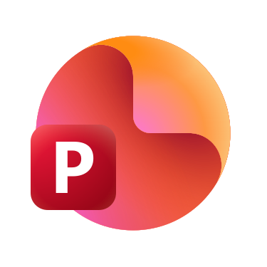
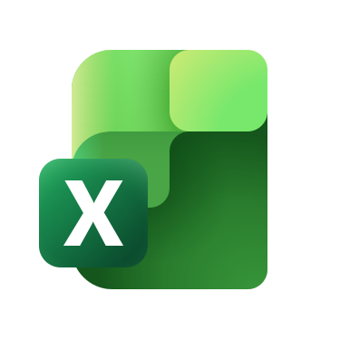
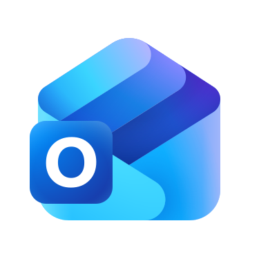

The Microsoft 365 Copilot journey — animated, story-driven stops through the Copilot family. Start with the free, personal Copilot at copilot.microsoft.com: open a browser, ask a real question, and see exactly where the answer comes from.
Every stop mirrors the real Copilot product UI. Start here — more stops (Copilot for work, Microsoft 365 apps) are on the way.
Meet the free, personal Copilot at copilot.microsoft.com, ask a real question and see it grounded in the web, pick a response style, and learn where its limits are — and when to reach for Microsoft 365 Copilot instead.
Start journey 01 →Before Copilot for work makes sense, meet the platform underneath it: the subscription, licence and account that unlock the apps, the company tenant your data lives in, how admins protect it with sensitivity labels and policies, and desktop vs web access.
Start journey 02 →The AI add-on that sits on top of Microsoft 365: Copilot Chat for everyone, how to tell you have the licence, Web vs Work grounding, why it can never show you more than you already can see, choosing a model, agents like Researcher and Analyst, and turning an answer into a Page.
Start journey 03 →Follow one real task — an executive proposal — from a blank page to a finished document: the Copilot pane, Chat Only vs Allow Editing, grounding the draft in your own files, rewriting for the audience, expanding a thin line, summarising a 50-page document, asking the document questions, and reviewing before you send.
Start journey 04 →
The proposal was approved, and now the steering committee needs slides. Turn the Word document straight into a deck, put it on the Contoso template, add a slide from a prompt, simplify it for executives, bring in visuals and speaker notes, then ask the deck which slides are still too dense.
Start journey 05 →
Leadership wants numbers. Eighteen months of support tickets, no conclusions — so Alex asks the workbook questions in plain English instead of building the model first: trends, the best region, unusual spikes, a forecast, and finally a summary leadership can act on.
Start journey 06 →
Alex comes back from leave to 300 unread emails. Summarise what actually matters, collapse a fifty-message thread into its decisions, draft a reply that confirms the next steps, adjust the tone until it fits, and walk into tomorrow’s meeting already prepared.
Start journey 07 →Alex joins the steering committee twenty minutes late. Catch up on what was missed, get the recap when it ends, pull out the action items that belong to Alex, see the decisions that were actually made, and question the transcript about who said what and when.
Start journey 08 →It was never six different assistants. See the same Copilot behind every app Alex used, reopen yesterday’s conversation from its history, reach that conversation from any surface, carry the context forward into today’s work, and turn a good answer into a Page the team can keep.
Start journey 09 →The finale. Alex’s first month at Contoso, replayed as five honest before-and-after comparisons — documents, presentations, data, email and meetings — and then the one assistant behind all of them. Where the value actually comes from, and what Alex still decides.
Start journey 10 →That is Alex’s first month at Contoso, end to end — ten stops, one connected story.
The official, always-current Microsoft Learn hub for Microsoft Copilot — free personal use and Microsoft 365 Copilot for work.